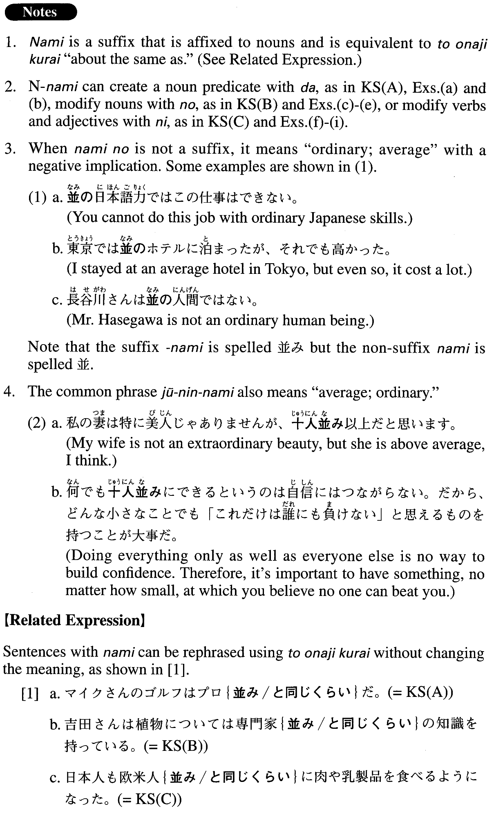

←
DoJG
→
並み
(A. 323)
Example sentences
(ksa).
マイクさんのゴルフはプロ
並み
だ。
Mike's golf skills are about the same level as a pro's.
(ksb).
吉田さんは植物については専門家
並み
の知識を持っている。
Regarding plants, Ms. Yoshida has as much knowledge as a specialist.
(ksc).
日本人も欧米人
並み
に肉や乳製品を食べるようになった。
Japanese people now eat (literally: have come to eat) as much meat and dairy products as Westerners (literally: Europeans and Americans) do.
(a).
今月の降水量は平年
並み
だそうだ。
It is said that this month's precipitation is about the same as (that of the same month) in an average year.
(b).
当社に登録されている通訳の英語力はネイティブ
並み
です。
The interpreters registered with our company have a native level of English proficiency.
(c).
今日はまだ5月だというのに8月
並み
の暑さだ。
Although it is still May today, it is as hot as August.
(d).
ダイエット用品、スポーツ器具、美容雑貨など、アメリカのヒット商品を現地
並み
の価格でお届けします。
We deliver top-selling (literally: hit) products from America, including diet products, athletic equipment and beauty goods, at U.S. prices.
(e).
今日はリハーサルだったが本番
並み
の緊張感を味わった。
Although today's (performance) was a rehearsal, I felt the same level of tension as if it were the real performance.
(f).
やっと仕事も見つかって何とか人
並み
に暮らしています。
I finally found a job, and somehow am making a go of it, living like other people do.
(g).
私はパートなのに、正社員
並み
に仕事をさせられている。
Despite the fact that I'm only a part-timer, they make me work as much as the regular employees.
(h).
電気自動車の価格をガソリン自動車
並み
に下げるのは極めて難しい。
It is extremely difficult to reduce the price of an electric car so it is on a par with a gasoline car.
(i).
ここの寿司屋は回転寿司
並み
に安い。
This sushi bar is cheap like a conveyer belt sushi bar.
Formation
(i)
Noun
並み
だ
真冬
並み
だ
Something is about the same as that in mid-winter
(ii)
Noun
1
並み
のNoun
2
大人
並み
の力
Power as strong as an adult’s
(iii)
Noun
並み
に
人
並み
に
Like ordinary people
